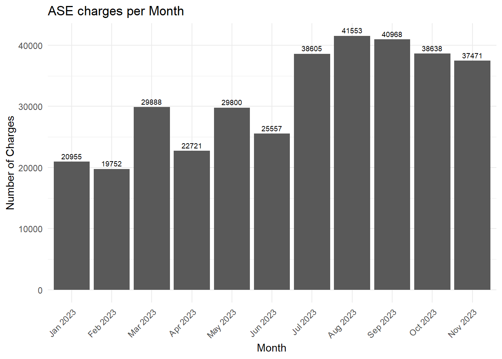

| Speed Over Limit | Penalty |
|---|---|
| 1-19 km/h above speed limit | $5.00/km |
| 20-29 km/h above speed limit | $7.50/km |
| 30-49 km/h above speed limit | $12.00/km |
| 50+ km/h above speed limit | Court Settled |
Efficacy of Toronto’s Automated Speed Enforcement Cameras
1 Task Formulation & Approach
The City of Toronto is avid on regulating and enforcing traffic laws, especially speeding laws. The city first introduced the Automated Speed Enforcement (ASE) system in 2019, and saw the first 50 ASE cameras being installed in July of 2020.
Drivers who are caught speeding by a camera are tagged by their carplates, and are charged at different rates depending on their speed. As per the Ontario Court of Justice (Cheif of Justice (2024)), the charges are as shown in the following table:
In this paper, we will investigate the efficacy of the ASE system in Toronto in 2023. We will take a look at how many charges were laid by ASE cameras per month, and compute interesting statistics and values like potential revenue using Table 1.
2 Data
Data used in this paper are gathered from Open Data Toronto through the opendatatoronto library (Gelfand (2022)). One dataset, Automated Speed Enforcement (ASE) Charges (Data (2024)), was used to analyze speeding charges enfored by the new ASE system across Toronto. Data was cleaned, transformed and analyzed using R (R Core Team (2023)), using functionalities from packages including tidyverse (Wickham et al. (2019)), dplyr (Wickham et al. (2023a)), ggplot2 (Wickham et al. (2023b)), and janitor (Firke (2023)). Details of the data cleaning process and analysis are detailed below.
2.1 Preliminary Planning
The dataset we’re interested in is very simple. The only feature it needs to contain is the number of ASE charges. We can delimit this feature in many ways, but we will do it by months. For example, the final cleaned & transformed dataset could look something like this:
| Month | Number of Charges |
|---|---|
| January 2023 | 974 |
| February 2023 | 1294 |
| March 2023 | 1106 |
| … | … |
The exact shape of the dataset can vary, but it must somehow communicate the total number of ASE charges per month in the city of Toronto.
2.2 Automated Speed Enforcement (ASE) Charges
The dataset published by Transportation Services, Toronto (Data (2024)) captures the number charges that each uniquely-identified ASE camera has accumulated across the city. It uses columns to split the accumulated charges by month, for each individual camera. The data we will use for analysis in this paper will capture January 2023 onwards. Note that the retrieved data only covers up to November 2023, so December 2023 cannot be included in our analysis. Below is a sample of the cleaned data with the relevant features:
| Site Code | Location* | Jan 2023 | Feb 2023 | Mar 2023 | Apr 2023 | May 2023 | Jun 2023 | Jul 2023 | Aug 2023 | Sep 2023 | Oct 2023 | Nov 2023 |
|---|---|---|---|---|---|---|---|---|---|---|---|---|
| A007 | Jameson Ave. South of Laxton Ave. | 0 | 0 | 0 | 0 | 0 | 0 | 164 | 572 | 486 | 940 | 664 |
| A215 | Dufferin St. South of Claver Ave. | 58 | 0 | 0 | 0 | 0 | 0 | 0 | 0 | 0 | 0 | 0 |
| A016 | Ridge Hill Dr. Westbound West of Old Park Rd. | 0 | 0 | 0 | 0 | 0 | 0 | 537 | 504 | 359 | 134 | 305 |
| A017 | Caledonia Rd. Southbound North of Rogers Rd. | 0 | 0 | 0 | 0 | 0 | 0 | 0 | 640 | 519 | 310 | 349 |
| A018 | Gladstone Ave. Southbound South of Cross St. | 0 | 62 | 587 | 496 | 424 | 228 | 835 | 821 | 576 | 484 | 598 |
| A037 | Main St. Northbound South of Swanwick Ave. | 0 | 12 | 65 | 38 | 60 | 54 | 95 | 71 | 66 | 67 | 218 |
We can sum each row by column to achieve a structure that satisfies what we planned in Section 2.1.
| Total | Jan 2023 | Feb 2023 | Mar 2023 | Apr 2023 | May 2023 | Jun 2023 | Jul 2023 | Aug 2023 | Sep 2023 | Oct 2023 | Nov 2023 | |
|---|---|---|---|---|---|---|---|---|---|---|---|---|
| NUMBER OF CHARGES | 345908 | 20955 | 19752 | 29888 | 22721 | 29800 | 25557 | 38605 | 41553 | 40968 | 38638 | 37471 |
3 Results
3.1 ASE Charge Statistics
Between January and November 2023, there were a total of 345908 charges laid by ASE cameras across Toronto (Table 4). On average, there were 31446 charges per month, with a standard deviation of 7948. The months with the highest number of charges are: August (41553), September (40968), and October (38638). The months with the lowest number of charges are: February (19752), January (20955), and April (22721).

4 References
Cheif of Justice, Office of the. 2024. “Schedule d Highway Traffic Act Speeding – Community Safety Zone.” https://www.ontariocourts.ca/ocj/provincial-offences/set-fines/set-fines-i/schedule-43/.
Data, Toronto Open. 2024. “Automated Speed Enforcement (ASE) Charges.” https://open.toronto.ca/dataset/automated-speed-enforcement-ase-charges/.
Firke, Sam. 2023. Janitor: Simple Tools for Examining and Cleaning Dirty Data. https://github.com/sfirke/janitor.
Gelfand, Sharla. 2022. Opendatatoronto: Access the City of Toronto Open Data Portal. https://sharlagelfand.github.io/opendatatoronto/.
R Core Team. 2023. R: A Language and Environment for Statistical Computing. Vienna, Austria: R Foundation for Statistical Computing. https://www.R-project.org/.
Wickham, Hadley, Mara Averick, Jennifer Bryan, Winston Chang, Lucy D’Agostino McGowan, Romain François, Garrett Grolemund, et al. 2019. “Welcome to the tidyverse.” Journal of Open Source Software 4 (43): 1686. https://doi.org/10.21105/joss.01686.
Wickham, Hadley, Romain François, Lionel Henry, Kirill Müller, and Davis Vaughan. 2023a. “Dplyr: A Grammar of Data Manipulation.” https://CRAN.R-project.org/package=dplyr.
———. 2023b. Ggplot2: Elegant Graphics for Data Analysis. Springer-Verlag New York. https://CRAN.R-project.org/package=dplyr.